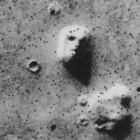
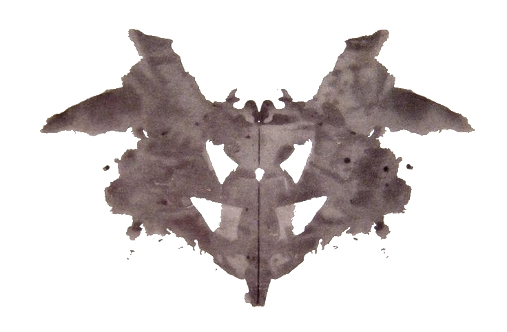
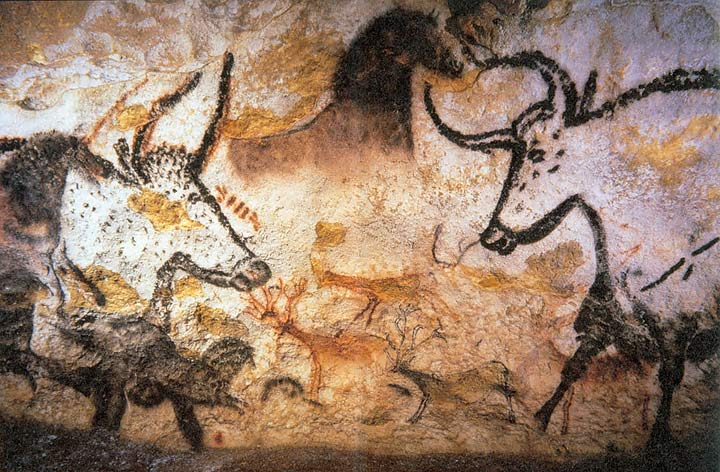
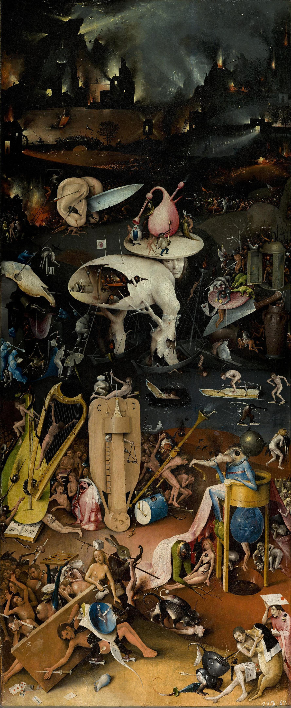

“If horses had hands, they would draw the gods in the shape of horses.”Xenophanes of Colophon, c. 530 BCE
On the 25th of July, 1976, NASA’s Viking 1 orbiter, then in its second week mapping Mars from above, photographed a small region of the Cydonia plain in search of a landing site for its sister craft. Among the thousands of frames the mission returned was one in which a low mesa, raked by long evening shadows, looked uncannily like a human face — a brow, two eye-sockets, a nose, a parted mouth, the suggestion of a helmet. A NASA scientist named Tobias Owen pointed it out, half in amusement, at a press conference. The agency released the image with a caption noting the trick of light. Within a year a small industry had grown up around the photograph: books arguing that it was a sculpted monument, lectures, films, a NASA cover-up theory, and a generation of articulate, intelligent men and women who knew, in their bones, that there had been a face on Mars.
In 2001, the Mars Global Surveyor passed back over the same mesa and photographed it again, this time at ten times the resolution and with the sun overhead. The mesa was a mesa. The face was gone. Eroded rock, rendered briefly humanoid by a single trick of light at one moment in a long ago summer. The civilisation had never been there. What had been there, all along, was the looking.1
This chapter is the one on which every other chapter of this volume rests, because the Face on Mars is not an oddity. It is the universal machinery. Almost without exception, every belief we will examine in the next nine chapters — the ghost at the foot of the bed, the demon in the convulsing girl, the witch in the village, the planet ruling your love life, the hidden hand behind the news, the god who hears your prayers — is produced by a single cognitive system doing exactly what evolution built it to do. That system is the topic of this chapter. It is called, in the language of the cognitive science of religion, the hyperactive agency detection device, or HADD. And the most useful first thing to say about it is that it is in your head right now, finishing this sentence, looking up to check the door is closed, and looking back.
Almost without exception, every belief in the next nine chapters — the ghost, the demon, the witch, the conspiracy, the god — is produced by a single cognitive system, doing exactly what evolution built it to do.
The Lineage of the IdeaFaces in the Clouds
The proposition that religion arises, in part, from the human habit of finding minds in things owes its modern form to two thinkers, working separately, in the 1990s.
The first was the American anthropologist Stewart Elliott Guthrie. In 1993 he published a quiet, careful book with a strange and lovely title — Faces in the Clouds: A New Theory of Religion. Its central argument was that religion was not, at its root, an answer to the question of meaning, or an opiate of the masses, or a moral system, or a survival strategy — though it could become all of these. At its root, Guthrie argued, religion was a particular case of a more general human habit: the systematic over-attribution of human-like agents to non-human things. We see faces in clouds, in the bark of trees, in the burnt edges of toast. We talk to our cars. We attribute moods to the weather. We give names to our houseplants and find ourselves apologising to them. This is not, as the old caricature has it, the foolishness of "primitive" minds; it is the constant, low-grade output of a sober modern brain at rest. Religion, Guthrie said, is what happens when this universal habit is taken to its full conclusion: a world filled with hidden agents, with the largest agent of all behind everything.2
The second was the British-American cognitive scientist Justin Barrett. Barrett gave the idea its experimental and mechanistic form in a series of studies and a 2004 book provocatively titled Why Would Anyone Believe in God? He proposed that the human brain houses a specific cognitive subsystem — perhaps several, working together — whose job is to detect agents in the environment: anything that moves on its own, anything that acts toward a goal, anything that might have a mind and therefore intentions toward us. Barrett called this the agency detection device, and the crucial qualifier he attached to it was hyperactive. The system, he argued, is set deliberately too high. It produces, in normal life, a constant trickle of false positives — agents perceived where there are none. This, he proposed, is not a bug. It is the most adaptive setting evolution could have chosen.3
The Hyperactive Agency Detection Device (HADD) — the proposal that the human brain houses an agent-detecting subsystem deliberately calibrated to err on the side of finding minds where there are none, because in the world that built us, missing a real agent was usually fatal and finding a non-existent one usually was not.
The Logic of Being Wrong on PurposeThe Asymmetry That Built You
To see why a brain might evolve to be wrong about agents on purpose, hold for a moment in your mind a small scene. A hunter on the ancestral savannah hears, at dusk, a rustle in the grass to his left. Two possibilities. It is the wind. Or it is a lion. He cannot tell which. He has perhaps half a second to choose his response.
Consider the four possible outcomes of his decision, laid out as a small table in the mind of evolution.
If it is the wind, and he ignores it — he is fine. If it is the wind, and he flinches and runs — he is fine, perhaps slightly embarrassed, having burned a few calories he did not need to burn. If it is the lion, and he flinches and runs — he may live. If it is the lion, and he ignores it — he dies, and his lineage with him.
Three of the four boxes are survivable. One is not. And the one that is not is the one in which he fails to detect an agent that is there. So evolution, doing what evolution does, has selected hard against that single outcome. We are descended from the hunters who ran from the wind — not from the calm rationalists who ignored the rustle and proved themselves right four times in five. The fifth time killed them, before they could reproduce. You are the great-grand-child, a thousand times over, of the species’ most paranoid line.
This is the asymmetry that built every chapter in this volume. The cost of a false positive — seeing an agent that is not there — was, for most of human history, the small cost of a wasted flinch. The cost of a false negative — missing an agent that was there — was your life. A brain that did the arithmetic correctly would have selected, every time, for the side that overshoots.4
You are the great-grand-child, a thousand times over, of the species’ most paranoid line.
The EvidenceWhat the Laboratory Catches the Brain Doing
The case for HADD is not made by armchair theorising alone. There is a long experimental record. The cleanest single demonstration is more than eighty years old.
In 1944, the psychologists Fritz Heider and Marianne Simmel showed adult viewers a short black-and-white animation. On a white field, two triangles — one large, one small — and a small circle, moved around a rectangle that opened and closed like a door. The shapes did nothing but move along geometric paths. There were no faces, no eyes, no biological features of any kind. Heider and Simmel asked their viewers to describe what they had seen. Of thirty-four subjects, thirty-three produced elaborate narratives. The large triangle was a bully. The small triangle was its rival. The circle was the female they were fighting over. The bully chased the circle into the house and then trapped her there. The little triangle, brave, attempted a rescue. There was a chase, an escape, a fight, a triumph or a defeat. One single viewer, of thirty-four, reported what was actually on the screen: shapes moving on a field.5 The film has now been shown to thousands of subjects in dozens of cultures. The result is essentially universal. Show a human two moving triangles and a circle, and they will see a melodrama with hidden hearts.
Other evidence runs in the same direction. Infants as young as five months will follow with their eyes a self-propelled object as if expecting it to have goals, while declining to do so for an identical object that moves only when pushed.6 The fusiform face area, a specific patch of the temporal lobe, fires for any pattern that has roughly the geometry of a face — two dark spots above a horizontal line is enough — producing the experience of a face in the burnt toast, the front of an automobile, the cratered surface of a moon. This is the well-documented phenomenon of pareidolia, and it is not an error of unusual minds: it is the standard operation of the visual system, doing its assigned job under impoverished conditions.7 The brain is so tuned to find agents that it produces them out of nothing whenever any of the right ingredients — movement, symmetry, the suggestion of a face, the suggestion of a goal — are present.

The Long ViewThe Painted Caves and the Older Hand
It is tempting to read all of this as a finding of modern psychology — a curiosity confirmed in the laboratory. The truth is older and stranger. The same machinery has been at full power for as long as we have been recognisably human, and it has left its mark in the very first art the species produced.

For more than thirty-five thousand years, in caves across Europe, southern Africa, and the islands of South-East Asia, hunting peoples painted animals onto rock that, in some cases, was already half-shaped like the animal painted. The cave artists of Lascaux, of Chauvet, of Altamira used the natural bulges and crevices of the rock to give their painted bulls and bison three-dimensional depth, and they did so on purpose. The animal was already in the wall, in some sense, before it was painted on it. Whatever else we want to say about the religious or magical meaning of these paintings, one fact is undeniable: the people who made them were trained, in the deepest possible way, to see hidden agents in the surface of the world. They were not unlike us. They were us. The agency-detection machinery has been at full strength, in our species, for as long as we have left any trace of ourselves on earth.
The Whole Volume in One MechanismFrom the Rustle to the Pantheon
Here is the move that gives this chapter its place in the architecture of the volume. The same HADD that produces the flinch from the windless grass produces, in different conditions, every kind of belief we are about to examine. Walk it through with us.
From rustle to ghost. A creak in an empty house at three in the morning is, in a brain born to flinch from the rustle, never a creak. It is a someone. In modern brains shaped by horror films, that someone is a ghost. In the medieval brain it was a saint or a damned soul. In an animist forest village it would have been the spirit of a particular ancestor or place. The phenomenology is the same; the cultural costume is local.
From rustle to demon. An intrusive thought, an irrational impulse, a sudden movement of the body the conscious self did not order — the agency-detector, turning inward, finds within the same person a second agent. In Iron Age Mesopotamia this agent was a gidim. In medieval Europe a demon. In modern dissociative-trance disorder, a different self with a different name. We met this in Chapter Two.
From rustle to god. Unexplained order in the natural world — the sun keeping its course, the harvest arriving, the child healing — finds itself attributed to a hidden mind making it so. In a small society this is an ancestor; in a larger society a tribal god; in a literate civilisation a single unifying agent behind all of nature. Guthrie’s strong claim was that this is what religion fundamentally is: HADD scaled to the universe.8
From rustle to conspiracy. Events of clear human consequence — an assassination, a pandemic, an election — that lack a sufficient agent to satisfy the detector get assigned one. Behind the visible actors is felt the hidden hand: a cabal, a deep state, an elite. The same machinery that produces the gods of the village produces, in the modern megapolis, the QAnon believer. We will treat this case at length in Chapter Nine. The mechanism is one.
From rustle to weather. And in the smaller, more humane corner of the same equipment, the household: the weather seems angry today; the engine is reluctant; the cat is plotting; the laptop has it in for you. None of these are confessed beliefs — none of us, asked directly, would say we hold them — but the language we use is the residue of the detector running below the level of speech, putting a mind in everything that surprises us.
What the World Looks Like With the Dial At FullBosch and the Crowded Air
To imagine, briefly, what it is to live with the agency-detector at maximum strength, with no scientific filter applied, look at the work of Hieronymus Bosch — the late-medieval Dutch painter who produced, in the right-hand panel of his great triptych The Garden of Earthly Delights, perhaps the densest visual catalogue of a HADD-saturated world ever made.

Look at how few square inches of Bosch’s Hell are empty. Almost no surface is allowed to be merely a surface; almost no object is allowed to be a thing rather than a being. The musical instruments have eyes. The hollow trunks have inhabitants. The cooking pots glance at the cooked. This is not an artistic decision in isolation — it is a perfectly accurate report of what the agency-detector produces when it is given full theological permission and no countervailing scientific discipline. To Bosch’s contemporaries, this was not metaphor. This was, more or less, what they believed the unseen world looked like.
The same painting, if you can hold the thought, is the answer to the question of why every culture has produced a similar bestiary of unseen beings — jinn, devas, daimons, kami, ancestor-spirits, household gods. The capacity is universal; the local cast is supplied by the culture. We will see this pattern repeat in every chapter of this volume.
The Objection That Matters“Doesn’t This Prove Religion is Just a Brain Glitch?”
Here is the sharpest question this chapter has to answer, and it comes from both sides of the religious divide. If you can describe the mechanism that produces belief in invisible agents — HADD, pareidolia, anthropomorphism — then surely you have explained away religion. You have shown that gods and ghosts and demons are nothing more than the misfirings of a Stone Age threat-detector. Religion is the artefact of a primitive brain.
This conclusion does not, in fact, follow from the science, and an honest book has to say so. Consider, by analogy, that we now have an excellent neuroscience of how the eye sees the colour red. We can describe the wavelengths, the retinal cone types, the cortical processing, the cultural categories. Having a complete biological account of the perception of red does not tell us whether the strawberries on the kitchen counter are, in some sense outside our heads, red. The biology describes the seeing; it does not adjudicate the seen.
The same logic applies to HADD. To say "we have a brain that detects agents, and detects them under conditions of ambiguity at a rate higher than the evidence strictly warrants" is to describe a mechanism. It is not to say that every agent the mechanism reports is illusory. If God exists, the perception of God by his creatures would have to be the perception by some particular biological apparatus, and the apparatus could only be the one evolution gave us. To find the apparatus is not, by itself, to find that the apparatus is reporting nothing real. That is a separate question, and it is not a question this science can settle.9
What HADD does tell us, with confidence, is that the mere fact that intelligent people across all of human history have reported a sense of invisible agents in the world is not, in itself, strong evidence that such agents exist. The same mechanism produces a face on Mars, a melodrama in three triangles, and a ghost in a creaking house — in conditions where, on careful investigation, no agent is there. We have an instrument that systematically over-reports. Honest believers and honest skeptics can agree on the calibration of the instrument and still disagree on whether, in some cases, it is actually catching real signal. That disagreement does not get resolved by neuroscience. It gets resolved, where it can be resolved at all, by the rest of the evidence.
The biology of the detector tells us how it works, not what it is detecting. To find the apparatus is not yet to find that the apparatus reports nothing real.
When the Detector Speaks Too LoudThe Clinical Side
The same machinery that, at standard calibration, produces the felt presence of an ancestor in the empty hallway can, under particular conditions, produce experiences we recognise as clinical — and the recognition is one of the strongest pieces of evidence that HADD is, in fact, doing what we say it is.
When the muscle-paralysis of REM sleep fails to lift before consciousness returns, the brain — alert, frightened, immobile — floods the room with hallucinated agents: a witch on the chest, a shadow at the door, footsteps on the stairs. The same experience, with the same phenomenology, has been catalogued under names as varied as the Old Hag, the night-mare, the incubus, the jinn, alien abduction, demonic visitation, and ancestral visit. The biology is universal; the costume is cultural; and we treated it in detail in the previous chapter.10
One way to read the auditory hallucinations of schizophrenia is as an agency-detection error of internal speech: the patient’s own inner monologue is mis-attributed, by an over-cautious detector, to an external agent. The voice is real; what is wrong is who the voice is heard as belonging to. Studies of self-monitoring abnormalities in schizophrenia point in this direction, though the picture is still being filled in.11
In conditions of fatigue, fear, sensory deprivation, mountaineering at altitude, or solitary endurance, healthy people commonly report the felt presence of an additional, invisible companion — named the “third man” phenomenon after Shackleton’s Antarctic crossing, when he and his two companions all later reported the constant felt presence of a fourth man at their side. This is HADD under stress, in a brain whose social circuitry would rather hallucinate a companion than tolerate the absence of one. The mechanism is debated; the experience is real.12
None of these conditions are evidence of supernatural intrusion. All of them are evidence of a brain that contains, as standard equipment, the means to produce the experience of an unseen being, under the right ordinary conditions. The honest reading: the experience is the easy part of the universe to produce. It happens routinely in healthy brains. The question of what, if anything, the experience corresponds to outside the brain is the difficult one, and it is the one science cannot finish.
“Why do humans see hidden minds?”
Six who have looked at the same question from different sides.
“The asymmetry of costs. A flinch from the wind costs nothing; a calm appraisal of a lion costs everything. Selection has the only direction it could have: build the agent-detector hot. The trickle of false positives is the price of being alive.”
“HADD is one of several conserved, modular systems — theory of mind, intentionality detection, the fusiform face area. They run as standard equipment in all healthy brains. The interesting question is no longer whether they are there, but how they interact to produce the specific contents of a particular culture’s religion.”
“Every culture I have studied has invisible agents. The biological capacity is universal; the local pantheon — ancestors here, devas there, jinn somewhere else — is supplied by tradition. To treat the variety as evidence against any of it is to confuse the dialect for the language.”
“The biology of perception is no embarrassment to the believer. If God is, then we must have a faculty for sensing God, and that faculty must run on biological tissue, and that tissue must have an evolutionary history. To find HADD is not to refute religion. It is to find the organ.”
“You have an instrument that systematically over-reports agents under conditions of ambiguity. In every case we can investigate carefully, the report turns out to be a false positive. The honest extrapolation is that the cases we cannot investigate are also probably false positives. The mechanism does not prove there are no real agents being detected. It does shift the burden of proof, decisively, onto those who claim there are.”
“Whatever the metaphysical answer, here is the practical one: you live in a brain that finds hidden minds. The accident-prone reading of a delayed reply, the suspicion of a colleague’s motives, the felt presence of a lost parent at the edge of the bed — you cannot turn these off, and trying to would be inhuman. The work is to hold them as the reports they are, and to apportion belief in them to the evidence the rest of your life can supply.”
Myth vs. RealitySetting the Record Straight
What Is Often Said
“Belief in spirits, gods, and unseen agents is the artefact of primitive or uneducated minds. Modern, intelligent people are largely free of it. The persistence of religion and superstition is the residue of bad thinking and inadequate science.”
What the Evidence Shows
Belief in unseen agents is a near-universal output of standard human cognition. It runs at full strength in graduate students, in scientists, in Bosch, and in Newton. It can be moderated by education and reflection, but it cannot be removed without changing the brain itself. Treating believers as defective is a category error: they are running standard hardware. The right question is not why they believe, but how any of us — including the most disciplined sceptic — ever manages to override the default at all.
HADD is a strong working hypothesis, well supported by the evidence we have laid out. It is also a young theory, and the strongest claim of the “cognitive science of religion” school — that religion is, in essence, HADD scaled up — is still actively contested. Religion is also moral, ritual, social, political, and embodied; HADD is one component of how it is produced, not the whole story. Some of the experimental literature (especially studies claiming infants detect goal-directed motion in geometric shapes at very young ages) has had mixed replication. Treat the framework as the leading map of a still-growing territory, not as the final account.
The lines worth carrying out of this chapter.
- You are descended from the species’ most paranoid line. The asymmetry between missing a lion and flinching at the wind selected, decisively, for an agent-detector that overshoots.
- Every belief in the rest of this volume rides on this one mechanism. Ghost, demon, god, witch, conspiracy — the rustle in the grass running in different cultural costumes.
- The biology describes how the seeing works. It does not adjudicate the seen. To find HADD is to find the organ, not to disprove what the organ reports. That harder question is the rest of the evidence’s, not biology’s.
- The instrument systematically over-reports. Every case where careful investigation is possible — the Face on Mars, the haunted house, the séance — turns out to be the detector misfiring. The pattern is hard to ignore even where investigation is not yet possible.
- Treating believers as defective is a category error. They are running standard human cognition. The honest question is not why they believe, but how any of us ever manages to override the default.
If you keep one sentence: the rustle in the grass and the prayer at the bedside and the conspiracy theory in the news feed are the same machinery, doing the same job, in different conditions — and that machinery is, before any belief, what we are.
Research ReferencesSources & Notes
- ReferenceNASA / JPL, Viking 1 Orbiter frame 035A72 (25 July 1976); Mars Global Surveyor MOC E03-00824 (April 2001).
- HistoryGuthrie, S. E., Faces in the Clouds: A New Theory of Religion (Oxford University Press, 1993).
- DebatedBarrett, J. L., “Exploring the natural foundations of religion,” Trends in Cognitive Sciences (2000); Why Would Anyone Believe in God? (2004).
- ScienceThe evolutionary case for over-detecting agents under predator risk is developed in Atran, S., In Gods We Trust (2002); see also Boyer, P., Religion Explained (2001).
- ScienceHeider, F. & Simmel, M., “An experimental study of apparent behavior,” American Journal of Psychology 57 (1944).
- DebatedCsibra, G. & Gergely, G., on infants and goal-directed motion — the original studies are robust; some downstream extensions have had mixed replication.
- ScienceLiu, J., Li, J., Feng, L. et al., “Seeing Jesus in toast: neural and behavioral correlates of face pareidolia,” Cortex (2014); Kanwisher, N. et al., on the fusiform face area.
- DebatedGuthrie’s strong thesis — that religion is systematic anthropomorphism — remains a position in the field, not the consensus. Many cognitive scientists of religion treat HADD as one component of a multi-mechanism account.
- ReferenceOn the epistemic point that mechanism is not refutation: Alston, W. P., Perceiving God (1991); see also the long literature on the genetic fallacy.
- ScienceCheyne, J. A., on sleep paralysis as a generator of supernatural experience reports; cf. Volume VII, Chapter Three.
- DebatedFrith, C., The Cognitive Neuropsychology of Schizophrenia (1992) — self-monitoring and the externalisation of inner speech.
- DebatedGeiger, J., The Third Man Factor (2009) — popular treatment; the underlying neuroscience is still investigated.
Citations support the science presented; a production edition would carry full bibliographic detail and DOIs, externally verified.
Going FurtherRecommended Books
Read
- Stewart Guthrie, Faces in the Clouds (1993) — the founding text
- Pascal Boyer, Religion Explained (2001)
- Scott Atran, In Gods We Trust (2002)
- Justin Barrett, Why Would Anyone Believe in God? (2004)
- Robert McCauley, Why Religion Is Natural and Science Is Not (2011)
Watch
- The Heider–Simmel animation (1944) — on YouTube, two minutes; try describing what you see without using mental verbs
- Documentaries on the Face on Mars and its 2001 re-imaging
- Talks by Justin Barrett and Pascal Boyer on the cognitive science of religion